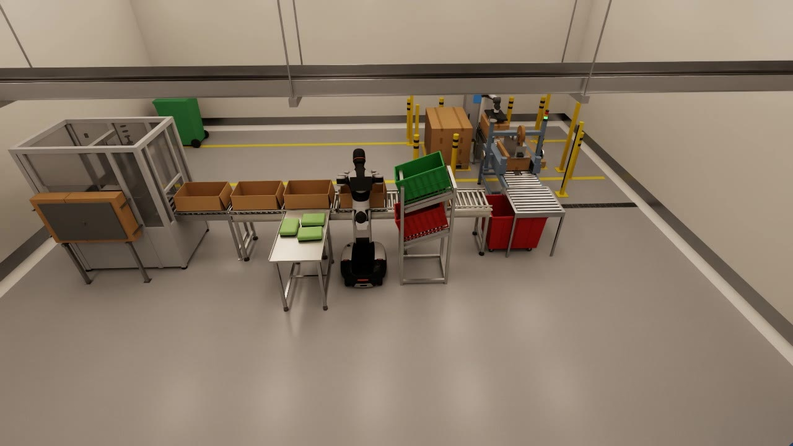
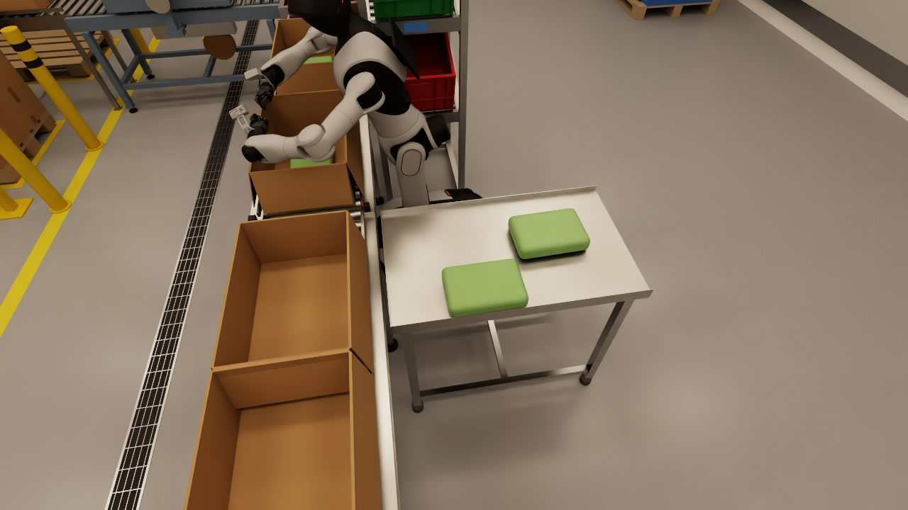
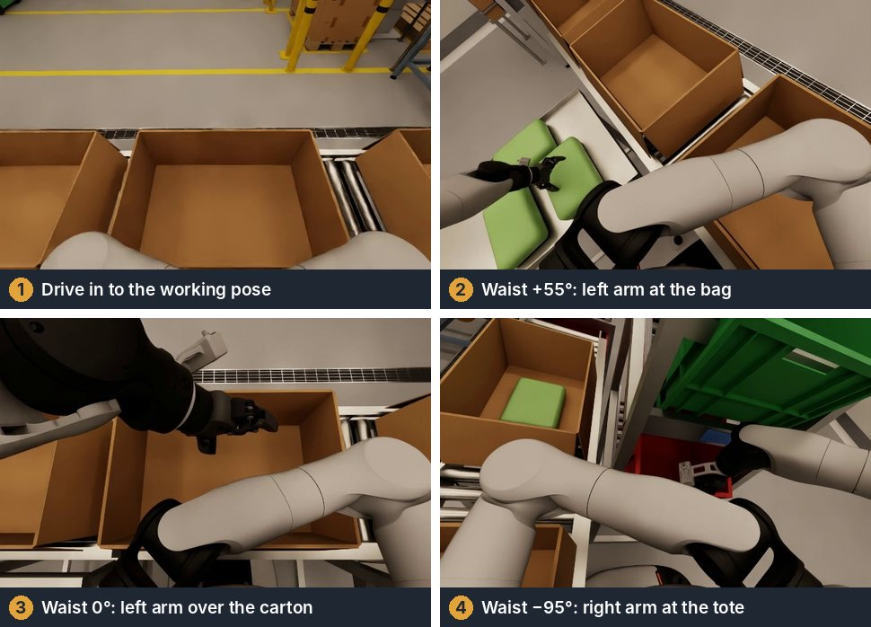
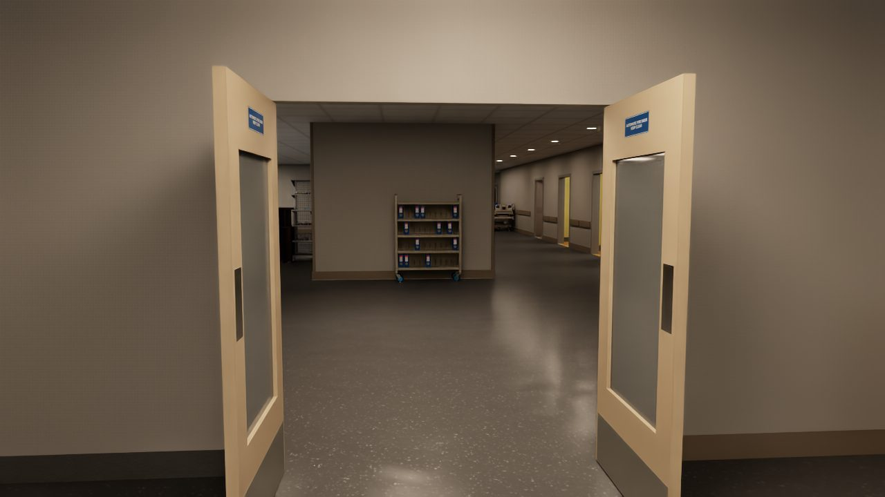
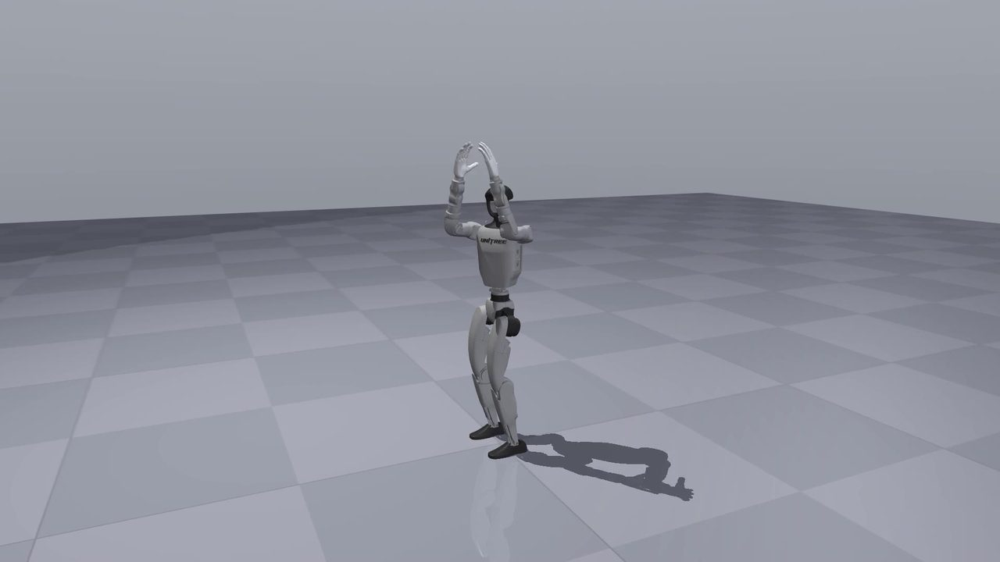

Wheeled humanoids
Dual arms on a stable base
Two arms, a waist and a wheeled base. Strong at stations, cells and flat floors, where the robot replaces a person standing at a table. Our reference platform is the AgiBot G2.

Services
Manufacturers ship capable hardware with a basic controller and an SDK. Getting that robot to pack a carton or cross a hospital ward is separate work, and it is the work we do, from the first line of task code to the day the robot runs on your floor.
Most clients start with a simulation study and move into training and integration. If you already own a robot, we start wherever it is stuck.

01 Application software
We write the logic for the job: where to pick, where to place, what to do with a reject and how to recover from a failed grasp. Every arm move goes through one motion server, which checks the full path against the robot's own body and the fixtures before a joint moves. Navigation runs on mapped zones with speed limits.
We build on the manufacturer's interface, such as the AgiBot GDK on the G2 and the low-level command interface on the Unitree G1. Code tested in simulation runs on the robot without a rewrite.
02 Policy training
Some skills are easier to learn than to program. We collect demonstrations by teleoperation or with a scripted generator, record synchronised camera, joint and command data, and train imitation policies such as ACT and behaviour cloning.
For locomotion and whole-body control we train with reinforcement learning in MuJoCo MJX, thousands of robots in parallel, then distil a teacher policy into a student that only uses the sensors the real robot has. Each stage has pass gates, and a policy reaches the robot only after it passes in simulation the tests it must pass on site.

03 On-site integration
A robot is finished when it works in your building with your people. We come to site to survey and map the space, set out the cell and the fixtures, and set speed zones and safety limits with your health and safety team.
We commission the robot against acceptance tests agreed with you before the work starts, train your operators and hand over with the test results. When your products or your layout change, we retrain and recommission.
04 Simulation studies
If you are deciding whether humanoids fit your operation, we build a simulated version of your site, put candidate robots in it and run your tasks. You get reach, layout and cycle-time evidence and an architecture for the deployment before you buy hardware.
How a programme startsPlatforms
We are not tied to a manufacturer. We choose the platform for the task and the building, and our software and training pipeline move with us from one robot to the next.

Wheeled humanoids
Two arms, a waist and a wheeled base. Strong at stations, cells and flat floors, where the robot replaces a person standing at a table. Our reference platform is the AgiBot G2.

Bipedal humanoids
Legs for thresholds, ramps and tight rooms, with dexterous hands for doors and handling. Our reference platform is the Unitree G1 with BrainCo Revo2 hands.
Quadrupeds
Legged platforms for inspection rounds, carrying and uneven floors. The same simulation, training and safety pipeline applies, with the platform chosen to suit the route.
How a project runs
Every stage ends with evidence: a report, a recorded run or a passed test. You decide at each one whether to carry on.
We visit, walk the process with your team and agree the task and the acceptance tests.
We model the site and the robot, then test reach, clearances and cycle time.
We collect demonstrations, train the policies and gate them against the tests.
We install on site, commission against the acceptance tests and train your operators.
We watch the numbers, retrain when things change and extend to the next task.
Tell us what it is, where it works and what it should be doing. We will tell you what it needs.